#8409 Mord im Orient-Express
Alternativ: Murder on the Orient Express
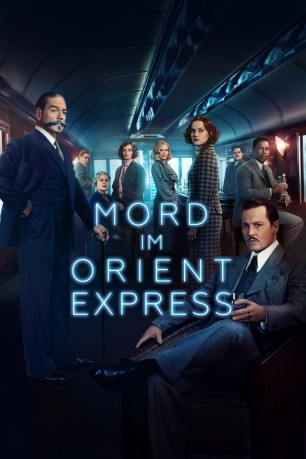 
 IMDB-Wertung: 6.5 / 10
IMDB-Wertung: 6.5 / 10  Metascore: 52
Metascore: 52 
Für die Rückreise von einem seiner Fälle nimmt Hercule Poirot (Kenneth Branagh) den legendären Orient-Express. An eine gemütliche Zugfahrt ist aber nicht lange zu denken, stattdessen hat der berühmte Meisterdetektiv bald wieder Arbeit: Ein Passagier wird ermordet und damit ist klar, dass einer der übrigen Reisenden der Täter sein muss. Die spanische Missionarin Pilar Estravados (Penélope Cruz), die Gouvernante Mary Debenham (Daisy Ridley), Professor Gerhard Hardman (Willem Dafoe), die Witwe Mrs. Hubbard (Michelle Pfeiffer) und der Doktor Arbuthnot (Leslie Odom Jr.) sind alle verdächtig. Doch bald wird Poirot klar, dass er den Fall nicht lösen wird, wenn er mehr über die möglichen Täter erfährt. Er muss mehr über das Opfer herausfinden - und sich beeilen, damit der Killer nicht nochmal zuschlägt...
Jahr: 2017
Dauer: 113 Minuten
FSK: 12
Land: USA Studio: Twentieth Century FoxTonspuren:
Untertitel: Deutsch, Englisch,
Auflösung: 1080p (1920x800) Größe: 9584 MB
Genre: Drama, Krimi, Mystery
Regisseur:  Kenneth Branagh
Kenneth Branagh
Drehbuch: Michael Green
Soundtrack: Patrick Doyle
Darsteller:
- Paapa Essiedu als Young Policeman
- Asan N'Jie als Hotel Waiter
- Michael Rouse als British Police Chief Inspector
- 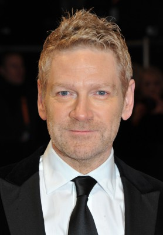 Kenneth Branagh als Hercule Poirot
 Elliot Levey als Rabbi
Elliot Levey als Rabbi- 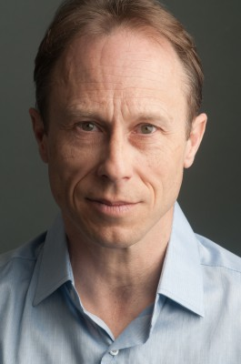 David Annen als Priest
 Joseph Long als Imam
Joseph Long als Imam- Andy Apollo als Armed Policeman
- Hadley Fraser als British Military Escort
- Daisy Ridley als Miss Mary Debenham
- Leslie Odom Jr. als Dr. Arbuthnot
- 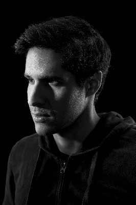 Ziad Abaza als Arab Shipmate
- 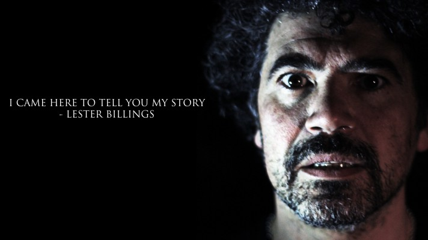 Miltos Yerolemou als Old Turk Baker
- Tom Bateman als Bouc
- Kathryn Wilder als Prostitute
 Manuel Garcia-Rulfo als Biniamino Marquez
Manuel Garcia-Rulfo als Biniamino Marquez Penélope Cruz als Pilar Estravados
Penélope Cruz als Pilar Estravados- 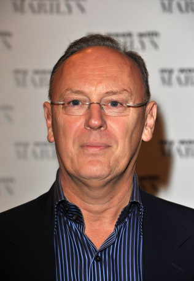 Richard Clifford als Maître d'
- 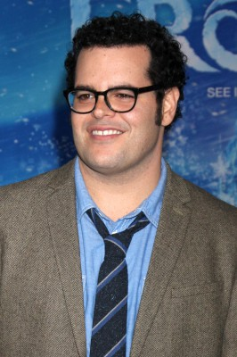 Josh Gad als Hector MacQueen
 Johnny Depp als Edward Ratchett
Johnny Depp als Edward Ratchett Derek Jacobi als Edward Henry Masterman
Derek Jacobi als Edward Henry Masterman- Sergei Polunin als Count Rudolph Andrenyi
- Adam Garcia als Italian Fan
 Lucy Boynton als Countess Elena Andrenyi
Lucy Boynton als Countess Elena Andrenyi Marwan Kenzari als Pierre Michel
Marwan Kenzari als Pierre Michel Michelle Pfeiffer als Caroline Hubbard
Michelle Pfeiffer als Caroline Hubbard- 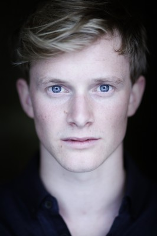 Harry Lister Smith als Stockman
- Matthew Hawksley als Waiter
 Judi Dench als Princess Dragomiroff
Judi Dench als Princess Dragomiroff Olivia Colman als Hildegarde Schmidt
Olivia Colman als Hildegarde Schmidt Willem Dafoe als Gerhard Hardman
Willem Dafoe als Gerhard Hardman- 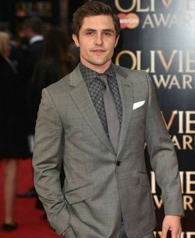 Phil Dunster als Colonel John Armstrong
- Miranda Raison als Sonia Armstrong
- Hayat Kamille als Susanne
- Rami Nasr als McQueen's Father
 Todd Boyce als Judge
Todd Boyce als Judge- Irfan Shamji als Yugoslavian Police Officer
- Tom Hanson als British Military Officer
- Scarlett Archer als Pauper Child (uncredited)
- Jeremy Azis als Mourner 124 (uncredited)
 Roy Beck als High Society Traveller (uncredited)
Roy Beck als High Society Traveller (uncredited) Jill Buchanan als International Traveller (uncredited)
Jill Buchanan als International Traveller (uncredited)- Alan Calton als Fireman (uncredited)
 Ross Carter als NYC Civilian (uncredited)
Ross Carter als NYC Civilian (uncredited)- Emanuel Coelho als Waiter (uncredited)
 Bern Collaço als Tokathyan Hotel Guest (uncredited)
Bern Collaço als Tokathyan Hotel Guest (uncredited) Tom Dab als Avalanche Worker (uncredited)
Tom Dab als Avalanche Worker (uncredited)- Adrian Danila als Porter (uncredited)
- 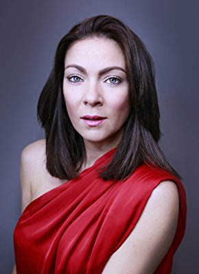 Honey Holmes als Funeral Mourner (uncredited)
- 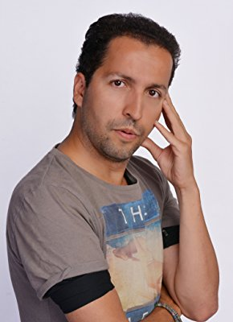 Lampros Kalfuntzos als Local Person (uncredited)
Datei: X:\Person\Agatha Christie\Mord im Orient-Express (2017, FSK12, 1920x800).mkv seit 01.03.2018
Festplatte: HD Collection-7+mehr(A-Z)+Person
 Es gibt insgesamt 12 Filme in der Gruppe 'Person\Agatha Christie'
Es gibt insgesamt 12 Filme in der Gruppe 'Person\Agatha Christie'